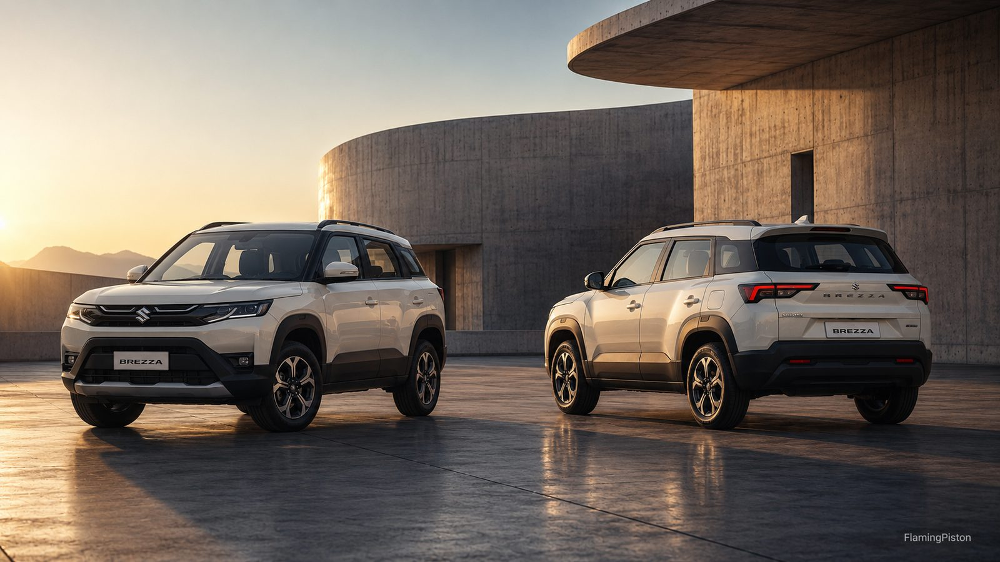

Brezza Turbo vs 1.5 Petrol (2026): Which Engine Should You Buy?

AI illustration: FlamingPiston
Published Sep 3, 2026 · Updated Nov 23, 2026
5 min read
Category: Compact SUVs
Choose the gearbox first. The Brezza’s 1.0-litre turbo is manual-only and petrol-only, so if you want an automatic or CNG, the 1.5 is your only option. If you are happy with a manual, the turbo makes more torque (170 Nm against 139 Nm) and, unusually, is the cheaper engine in every trim.
Quick verdict
Buy the turbo if you want a manual: it costs ₹61,000–85,000 less than the 1.5 manual in the same trim, pulls harder in the mid-range and is the only engine on the ZXi+ manual. Buy the 1.5 if you want the automatic or CNG.
The numbers side by side
| Item | 1.0 turbo-petrol | 1.5 petrol |
|---|---|---|
| Power | 110.12 PS | 103.05 PS |
| Torque | 170 Nm | 139 Nm |
| Gearbox | Six-speed manual only | Six-speed manual or six-speed torque-converter automatic |
| CNG version | No | Yes (LXi, VXi, ZXi) |
| Trims | LXi, VXi, ZXi, ZXi+ | Manual: LXi, VXi, ZXi. Automatic: VXi, ZXi, ZXi+ |
| Claimed mileage | 20.47 km/l (LXi, VXi); 19.96 km/l (ZXi, ZXi+) | Manual 21.09 km/l (LXi, VXi), 20.81 km/l (ZXi); automatic 20.17 km/l |
Figures from Maruti Suzuki’s brochure. Autocar India notes the Boosterjet makes 10 hp and 23 Nm more in the Brezza than in the Fronx.
Prices: the turbo is the cheaper engine
| Trim | Turbo manual | 1.5 manual | 1.5 automatic |
|---|---|---|---|
| LXi | ₹7.55 lakh | ₹8.40 lakh | Not offered |
| VXi | ₹8.70 lakh | ₹9.31 lakh | ₹10.61 lakh |
| ZXi | ₹9.99 lakh | ₹10.60 lakh | ₹11.90 lakh |
| ZXi+ | ₹11.31 lakh | Not offered | ₹13.60 lakh |
Ex-showroom, single-tone, as listed by CarDekho on 23 November 2026. The turbo manual is ₹85,000 cheaper than the 1.5 manual on the LXi and ₹61,000 cheaper on the VXi and ZXi. Moving from the turbo manual to the 1.5 automatic in the same trim costs ₹1.91 lakh on the VXi and ZXi, and ₹2.29 lakh on the ZXi+. The turbo trims also get extra equipment: the VXi Turbo has alloy wheels and a reverse camera, and the ZXi Turbo adds cruise control, front parking sensors, blind-spot warning and rear cross-traffic alert, none of which the ZXi 1.5 has. See our variants guide.
How they drive
We have not driven the two back to back; this section draws on Autocar India’s review. It found the turbo refined and very tractable, setting off smoothly with almost no lag. Although it makes 31 Nm more than the 1.5 from just 2,000 rpm, it is tuned to be so smooth and linear that you don’t really feel the added punch. In Autocar India’s tests the turbo went from 0 to 100 km/h in 12.36 seconds, 0.3 seconds quicker than the old 1.5 manual, and was a few seconds quicker in in-gear acceleration.
The 1.5 is the engine Autocar India describes as less punchy, but it is the only one available with the automatic gearbox. Read our Brezza automatic guide for that version.
Mileage and running cost
| Version | Claimed | Fuel cost per km |
|---|---|---|
| 1.0 turbo manual (LXi, VXi) | 20.47 km/l | ₹4.99 |
| 1.5 manual (LXi, VXi) | 21.09 km/l | ₹4.84 |
| 1.5 automatic | 20.17 km/l | ₹5.06 |
Cost per km is our illustration, using Delhi petrol at ₹102.12 a litre (V3Cars, 23 November 2026) and the claimed figures. On paper the difference is small, about ₹15 per 100 km between the turbo and the 1.5 manual. Real-world results will be lower: Autocar India’s trip computer showed 11–14 km/l during its turbo review, and its long-term turbo averaged 12.1 km/l. We have not found an independent test of the 2026 1.5. More in our Brezza mileage guide.
Which to choose
- Choose the turbo if you want a manual. It is cheaper, has more mid-range pull and, on the VXi and ZXi, more equipment.
- Choose the 1.5 if you want an automatic, or CNG for low running costs; see our Brezza CNG guide.
What Owners Say
The facelifted Brezza went on sale in July 2026, so owner reports are still early and most cover under 2,000 km. On 23 November 2026 we read owner posts on Team-BHP, CarWale and CarDekho, leaving out test drives, posts about the older model, duplicate reviews and anyone who had not bought or driven the car. These are owners’ experiences, not measured results; we say how many owners each point rests on.
- Turbo: easy in traffic, good for overtaking. Six turbo owners on Team-BHP, CarWale and CarDekho praise how tractable it is and how easily it overtakes; one says it pulls from about 1,800 rpm.
- Turbo: refinement is debated. Two Team-BHP owners differ: one finds it quiet inside but loud outside, with vibration on cold starts; the other finds it less refined than Maruti’s usual engines.
- Turbo: city mileage. Three owners on Team-BHP and CarWale report about 10–13 km/l in the city. Two of them report about 20 km/l on the highway with gentle driving.
- 1.5: smooth. A CarWale owner of a ZXi 1.5 manual calls the engine smooth and silent; a CarDekho 1.5 owner finds its city mileage good. That is two owners.
Owners back the turbo as the better manual, with one caveat: in town it is well below its claimed mileage. Those who value quietness may prefer the 1.5.
FAQs
Is the Brezza turbo more expensive than the 1.5 petrol?
No, it is cheaper. In the same trim, the 1.0 turbo manual costs ₹85,000 less than the 1.5 manual on the LXi and ₹61,000 less on the VXi and ZXi. Maruti has passed on the tax benefit of the smaller engine.
Is there a Brezza turbo automatic?
No. The 1.0 turbo comes only with a six-speed manual. The six-speed torque-converter automatic is offered only with the 1.5 petrol.
Which Brezza engine gives better mileage?
On paper, the 1.5: Maruti claims 21.09 km/l for the 1.5 manual on the LXi and VXi, against 20.47 km/l for the turbo. Autocar India saw 11–14 km/l on the turbo’s trip computer during its review and 12.1 km/l over its long-term test.
Is the Brezza turbo faster than the 1.5?
A little. Autocar India timed the turbo at 12.36 seconds from 0 to 100 km/h, only 0.3 seconds quicker than the old 1.5 manual, but found it a few seconds quicker in in-gear acceleration, where its extra 31 Nm shows.
Can I get the Brezza turbo with CNG?
No. CNG is offered only with the 1.5 petrol engine, as a factory-fitted version on the LXi, VXi and ZXi.
More in the Brezza series: Full Review · Real-World Mileage · Variants Explained · Automatic Review · CNG Review · Maintenance Cost · Boot Space · Safety & NCAP · Pros & Cons · vs Tata Nexon · vs Fronx · vs XUV 3XO CNG
Sources
- Maruti Suzuki: New Brezza brochure, features by variant and specifications (official, PDF)
- CarDekho: Maruti Brezza prices and variants
- Autocar India: 2026 Maruti Suzuki Brezza facelift review
- Autocar India: Brezza Turbo long-term review, 1,000 km report
- V3Cars: Petrol price in New Delhi
Owner discussions
- Team-BHP: 2026 Maruti Suzuki Brezza facelift review, owner posts
- CarWale: Maruti Brezza owner reviews
- CarDekho: Maruti Brezza user reviews
Links checked 23 November 2026. Prices are ex-showroom as listed on that date. Driving impressions and test figures are other publications’ and are named in the text; we have not driven the car. Owner reports were read on 23 November 2026; we do not show usernames.